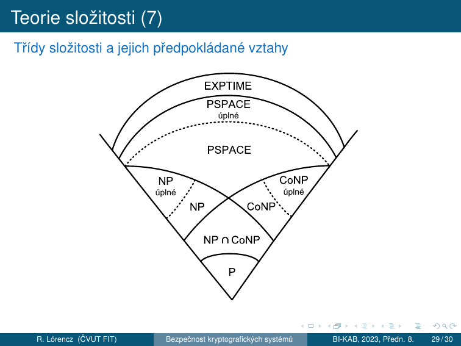

8. Bezpečnost kryptosystémů¶
Cíle kapitoly
- Znát typy bezpečnosti kryptosystémů a Kerckhoffsův princip
- Porozumět Shannonově teorii informace — entropie, obsažnost jazyka, nadbytečnost, vzdálenost jednoznačnosti
- Chápat konfúzi a difúzi jako nástroje k potlačení redundance
- Orientovat se v teorii složitosti a zařadit kryptografické problémy do tříd P/NP
8.1 Hodnocení odolnosti šifry¶
Odolnost šifry vůči útokům je určena:
- Vnitřní strukturou šifry (nelineární prvky, délka klíče, key management, ...)
- Použitou abecedou → určité bigramy, trigramy, atd. jako např. „XZ", „ZXW" se nevyskytují, což zjednodušuje útok → teorie informace
- Teoretickou bezpečností (pseudonáhodné generátory čísel jsou predikovatelné, ...)
- Složitostí matematického problému, na kterém je šifra postavena → podmíněná bezpečnost a nepodmíněná bezpečnost v rámci teorie složitosti
Dvě hlavní teorie
- Teorie informace → za jakých podmínek znalosti (jazykového) kryptografického prostředí lze kryptografický algoritmus rozluštit.
- Teorie složitosti → s jakou složitostí bude možné kryptografický algoritmus rozluštit.
8.2 Typy bezpečnosti¶
Teoretická bezpečnost¶
Definice — Teoretická bezpečnost
O teoretické bezpečnosti kryptosystému hovoříme tehdy, pokud při splnění konkrétních podmínek je šifra považována za bezpečnou, ovšem dané podmínky může být v praxi těžké splnit.
Problémy v praxi: - distribuce tajného klíče - generování náhodných čísel - implementace v hardwaru - ...
Příklad — PS3 / ECDSA
Sony pro generování podpisu u zařízení PS3 použilo algoritmu ECDSA. Soukromý klíč SK byl však napevno nastaven v zařízení, stačily tak dva různé digitální podpisy a klíč SK se dal snadno dopočítat.
Nepodmíněná bezpečnost¶
Definice — Nepodmíněná bezpečnost
Kryptosystém je nepodmíněně bezpečný, pokud můžeme dokázat, že jej není možné prolomit bez ohledu na útočníkem použité prostředky.
- Pokud útočník nezíská opakovaným použitím šifry žádnou novou užitečnou informaci, hovoříme o absolutní bezpečnosti.
- Protože asymetrické šifry ve svém VK nesou informace pro zjištění SK, nemohou být nikdy nepodmíněně bezpečné.
Příklad — Vernamova šifra (OTP)
Vernamova šifra (one-time-pad) provádí posuv každého znaku o náhodný počet míst v použité abecedě. Je jedinou prakticky používanou nepodmíněně bezpečnou šifrou, ovšem za podmínek: - klíč délky ≥ délky zprávy - klíč náhodný, nikdy nepoužitý znovu - šifrování: \(c = p \oplus k\)
Problém: klíč musíme tajně distribuovat → stejně těžký problém jako distribuovat zprávu.
Podmíněná bezpečnost¶
Definice — Podmíněná bezpečnost
Kryptosystém je podmíněně bezpečný, pokud jeho prolomení vyžaduje prostředky, které nemáme (výpočetní výkon, paměťový prostor, ...).
- Podmíněná bezpečnost má velmi striktní podmínky → zavádíme podtřídy: prokazatelnou a výpočetní bezpečnost.
- Podmíněná bezpečnost je slabší variantou nepodmíněné bezpečnosti — opírá svou bezpečnost o prostředky oproti podstatě šifry.
Příklad — AES
AES je systémem podmíněně bezpečným, protože při útoku nemáme žádnou informaci o klíči a lze tak provádět pouze útok hrubou silou, což je zatím výpočetně neproveditelné v rozumném čase.
Prokazatelná bezpečnost¶
Definice — Prokazatelná bezpečnost
Kryptosystém je prokazatelně bezpečný, pokud je znám matematický důkaz, který říká, že provést útok znamená vyřešit problém výpočetně ekvivalentní s problémem třídy NP.
NP problém
Problém neřešitelný v polynomiálním čase deterministickým Turingovým strojem → více v teorii složitosti dále v přednášce.
Příklad — RSA
RSA je systémem prokazatelně bezpečným, protože je založen na problému faktorizace (spadá do třídy NP).
Výpočetní bezpečnost¶
Definice — Výpočetní bezpečnost
Kryptosystém je výpočetně bezpečný, pokud pro jeho prolomení je třeba vynaložit prostředky nebo čas, které přesahují cenu respektive životnost informace.
Příklad — COPACABANA (2006)
Prolomení DES na zařízení typu COPACABANA (2006) je možné v rámci 7 dní s náklady na hardware kolem $10 000. V takovém případě je šifra výpočetně bezpečná pro informace, které ztrácí význam během kratší doby nebo mají menší hodnotu.
COPACABANA
Jedná se o zařízení založené na FPGA optimalizované pro běh kryptoanalytických algoritmů, vhodné pro paralelní výpočetní problémy.
Kerckhoffsův princip (1885)¶
Kerckhoffsův princip
Systém musí být prakticky, pokud ne matematicky, nedešifrovatelný a jeho utajení nesmí být podmínkou jeho bezpečnosti. Dále musí být přenositelný, schopný měnit klíče dle přání uživatele, snadný na používání a nesmí vyžadovat žádné speciální znalosti uživatele.
- Při posuzování bezpečnosti kryptosystému předpokládáme, že útočník zná celý kryptosystém (Shannonovo maximum: "The enemy knows the system").
- Založení bezpečnosti na security through obscurity je nepřijatelné — může sloužit pouze jako další bezpečnostní prvek.
8.3 Shannonova teorie informace¶
V letech 1948 a 1949 C. E. Shannon zveřejněním svých prací položil základy teorie informace a teorie šifrovacích systémů. Stanovil teoretickou míru bezpečnosti šifry pomocí neurčitosti otevřeného textu (OT).
- Mějme ŠT → jestliže se nic nového o OT nedozvíme (například zúžení prostoru možných zpráv), i když přijmeme jakékoliv množství ŠT → šifra dosahuje absolutní bezpečnosti (perfect secrecy), tj. ŠT nenese žádnou informaci o OT.
- Zvyšováním počtu znaků ŠT je u většiny praktických šifer (zvlášť u historických šifer) poskytováno více a více informace o OT.
- Tato informace nemusí být bezprostředně viditelná.
- Vzdálenost jednoznačnosti = počet znaků ŠT, pro který množství informace o OT obsažené v ŠT dosáhne takového bodu, že je možný jen jediný OT.
Entropie¶
Definice — Entropie
Entropie je množství informace obsažené ve zprávě. Teorie informace měří entropii zprávy průměrným počtem bitů nezbytných k jejímu zakódování při optimálním kódování (minimum bitů).
Entropie zprávy ze zdroje \(X\) je:
kde \(p_1, \ldots, p_n\) jsou pravděpodobnosti všech zpráv \(X_1, \ldots, X_n\) zdroje \(X\) a \(-p_i \log_2 p_i\) = počet bitů nutných k optimálnímu zakódování zprávy \(X_i\).
Speciální případ — \(n\) zpráv se stejnou pravděpodobností \(p = \frac{1}{n}\):
Maximální entropie
Lze dokázat, že maximální entropie nabývá zdroj, který produkuje všechny zprávy se stejnou pravděpodobností. Má-li zdroj \(n\) zpráv se stejnou pravděpodobností \(\frac{1}{n}\), pak dosahuje maximální entropie \(\log_2 n\).
Tip: V případě velkých souborů dat lze získat orientační představu a horní odhad pro entropii těchto souborů použitím kvalitního komprimačního programu → entropie souboru ≤ počet bitů komprimovaného souboru.
Příklady výpočtu entropie
Příklad 1: Mějme 2 možné zprávy: „panna" nebo „orel" a nechť mají stejnou pravděpodobnost:
Příklad 2: Zdroj vydávající zprávy: „bílý" s pravděpodobností \(\frac{1}{4}\) a „černý" s pravděpodobností \(\frac{3}{4}\):
Příklad 3: Zdroj vydávající pouze jednu zprávu \(p = 1\):
Daný zdroj nemá žádnou neurčitost a zprávy z něj nenesou žádnou informaci.
Neurčitost¶
Neurčitost
Entropie zprávy vyjadřuje také míru její neurčitosti. Tato míra neurčitosti je počet bitů, které potřebujeme získat luštěním ŠT, s cílem určit OT.
Příklad
Například v případě, že část ŠT „4lů9Fg" vyjadřuje buď výsledek „panna" nebo „orel", pak míra neurčitosti této zprávy je rovna právě 1 bitu.
Obsažnost jazyka¶
Definice — Obsažnost jazyka (průměrná entropie)
Pro daný jazyk uvažujme množinu \(X\) všech \(N\)-znakových zpráv. Obsažnost jazyka pro zprávy délky \(N\) znaků definujeme jako výraz
tj. průměrnou entropii na 1 znak (průměrný počet bitů informace v 1 znaku).
- Máme-li dlouhou zprávu, její další písmeno bývá v řadě případů určeno již jednoznačně nebo je možný jen malý počet variant.
- Například máme-li 13 znakovou zprávu „Zítra odpoled", je pravděpodobné, že pokračuje písmenem „n". U 14. znaku nepřibude žádná entropie.
- U přirozených jazyků výraz \(R_N\) pro zvyšující se \(N\) klesá.
- Z předchozího plyne: \(\lim_{N \to \infty} R_N = r\)
- Konstanta \(r\) je obsažnost jazyka vzhledem k jednomu písmenu.
- Pro hovorovou angličtinu je \(r = 1.3\) až \(1.5\) bitů/znak.
Absolutní obsažnost jazyka¶
Definice — Absolutní obsažnost jazyka \(R\)
Mějme stejně pravděpodobné zprávy tvořené v jazyce s \(L\) stejně pravděpodobnými znaky:
\(R\) nazýváme absolutní obsažnost jazyka. Absolutní obsažnosti dosahuje takový jazyk, který poskytuje generátor náhodných znaků. Je to maximální neurčitost, kterou přirozené jazyky nemohou dosáhnout, neboť jednotlivé znaky tvoří slova a věty, které mají odlišné pravděpodobnosti.
Nadbytečnost jazyka¶
Definice — Nadbytečnost jazyka \(D\)
Nadbytečnost (redundance) jazyka vzhledem k jednomu písmenu nám vyjadřuje, kolik bitů je v jednom znaku daného jazyka nadbytečných, a je dána výrazem:
a číslo \(\frac{100D}{R}\) pak udává, kolik bitů jazyka je nadbytečných procentuálně.
Nadbytečnost angličtiny
Pro angličtinu máme \(L = 26\), \(R = \log_2 26 = 4.7\) bitů na písmeno, \(r = 1.5\) bitů/písmeno:
ASCII redundance
Anglický text v kódu ASCII má v každém bytu 7b informací a 1b parity → 1.5b informace anglického znaku. 8b informace může nést také 8b informace:
Vzdálenost jednoznačnosti¶
Odvození¶
Uvažujme pro ilustraci následující úvahu (neplatí pro všechny šifry):
- Mějme množinu zpráv \(M\), množinu ŠT \(C\) a množinu \(2^{H(K)}\) stejně pravděpodobných klíčů \(K\).
- Předpokládejme, že máme ŠT \(c\) délky \(N\) znaků a že pro klíče \(k \in K\) jsou odpovídající OT \(D_k(c)\) vybírány z množiny všech zpráv \(M\) nezávisle a náhodně.
- V množině \(M\) je celkem \(2^{RN}\) zpráv, z toho je \(2^{rN}\) smysluplných zpráv a \(U = 2^{RN} - 2^{rN}\) zpráv nesmysluplných.
- Pokud provedeme dešifrování ŠT \(c\) všemi možnými \(2^{H(K)}\) klíči, dostáváme \(2^{H(K)}\) zpráv. Z nich je smysluplných průměrně pouze:
- Abychom dostali pouze jednu zprávu — tu, která byla skutečně zašifrována — musí být \(S = 1\), tedy \(H(K) = DN\).
Definice — Vzdálenost jednoznačnosti \(\delta_U\)
Z předchozího plyne: \(H(K) = DN\) a \(N = \frac{H(K)}{D} = \delta_U\).
Vzdálenost jednoznačnosti je definována jako:
kde \(H(K)\) je neurčitost klíče a \(D\) je redundance jazyka otevřené zprávy.
Jednoduchá substituce nad anglickou abecedou
Vzdálenost jednoznačnosti jednoduché substituce:
V ŠT o 28 znacích je tedy dostatečné množství informace na to, aby zbýval v průměru jediný možný OT. K rozluštění jednoduché substituce v angličtině postačí tedy v průměru 28 písmen ŠT.
Vigenèrova šifra s klíčem délky \(V\)
Mějme klíč Vigenèrovy šifry o délce \(V\) náhodných znaků a uvažujme otevřený text z anglické abecedy:
To je na první pohled optimistický výsledek, ale: - Mějme ŠT v délce 1.5 násobku hesla, tj. oněch 1.5V znaků. 1. a 3. třetina textu používá stejné heslo, které lze eliminovat odečtením a poté s určitou pravděpodobností vyluštit 1. a 3. třetinu OT. - Zůstává neznámá 2. třetina OT, kde je heslo zcela náhodné a neznámé — nemáme tedy z něj žádnou informaci. Zbývá redundance OT, z níž známe 1. a 3. třetinu. - \(\delta_U\) je střední hodnota vzdálenosti jednoznačnosti a nezohledňuje právě takové rozložení informace z OT, které je k dispozici. - S ŠT o délce \(2V\) znaků budeme schopni heslo eliminovat a luštit metodou knižní šifry. Skutečnou vzdálenost jednoznačnosti lze proto v závislosti na konkrétním problému a daném \(V\) očekávat v rozmezí \(1.5V\) až \(2V\).
Upozornění
Vzdálenost jednoznačnosti je odhad množství informace nutného k vyluštění dané úlohy. Neříká nic o složitosti takové úlohy. I když máme dostatek informace, prolomení může být výpočetně neproveditelné.
Konfúze a difúze¶
Podle Shannona jsou to základní techniky k potlačení redundance \(D\) ve zprávě:
Konfúze
Konfúze — maří vztahy mezi ŠT a OT. Ztěžuje studium redundancí a statistických struktur OT.
- Nejjednodušší: substituce (Caesarova šifra)
- Proudové šifry: konfúze, pokud také zpětné vazby → i difúze
- Moderní substituční šifry jsou mnohem složitější, nahrazují se dlouhé bloky OT blokem ŠT a mechanizmus substituce se mění s bity klíče nebo OT.
Realizace: S-boxy v DES, SubBytes v AES
Difúze
Difúze — rozprostírá redundanci OT. Vyhledávání rozprostřených redundancí ztěžuje kryptoanalýzu.
- Nejjednodušší: transpozice
- V současnosti jsou tyto způsoby kombinovány k dokonalejšímu rozptylu redundance.
- Obecně — difúzi lze snadno luštit, ale již ne například po dvojnásobné transpozici.
Realizace: ShiftRows + MixColumns v AES, P-permutace v DES
Dobrá bloková šifra musí mít obojí.
8.4 Teorie složitosti¶
Teorie složitosti je metodologický základ pro analýzu výpočetní složitosti kryptografických technik a algoritmů. Porovnává kryptografické techniky a algoritmy a určuje jejich bezpečnost.
Výpočetní složitost algoritmu je dána výpočetním výkonem potřebným pro jeho realizaci a zahrnuje: - \(T(n)\) — časovou náročnost - \(S(n)\) — prostorovou náročnost (paměťové požadavky)
Proměnná \(n\) je rozsah vstupu.
O-notace¶
Výpočetní složitost se vyjadřuje řádem \(O\) (Order) hodnoty výpočetní složitosti:
- Řád složitosti \(O\) roste nejrychleji v závislosti na \(n\).
- Všechny prvky nižšího řádu se zanedbávají → systémově nezávislé vyjádření.
- Příklad: \(7n^4 + 5n^2 + 6\) je \(O(n^4)\)
| Případ | Interpretace |
|---|---|
| \(T(n) = O(n)\) | Dvakrát větší vstup → dvakrát větší časová náročnost |
| \(T(n) = O(2^n)\) | Zvětšení vstupu o 1 → prodloužení doby výpočtu dvojnásobně |
| \(T(n) = O(1)\) | Časová složitost je nezávislá na \(n\) (na vstupech) |
Klasifikace algoritmů podle složitosti¶
| Třída | O-notace | Poznámka |
|---|---|---|
| Konstatní | \(O(1)\) | Nezávisí na vstupu |
| Lineární | \(O(n)\) | |
| Polynomiální | \(O(n^m)\), \(m\) konstantní | Kvadratická \(O(n^2)\), kubická \(O(n^3)\), ... |
| Exponenciální | \(O(t^{f(n)})\), \(t > 1\), \(f(n)\) polynomiální | Příklad: \(O(2^n)\) |
| Superpolynomiální | \(O(t^{f(n)})\), \(f(n)\) > konst., \(f(n)\) < lineární | Podmnožina exponenciálních |
Důležitá poznámka
Známé luštitelské algoritmy jsou časově superpolynomiálně složité. Nedá se ale zatím dokázat, že nebude nikdy možné objevit nějaký časově polynomiální luštitelský algoritmus.
Tabulka složitosti pro \(n = 10^6\)¶
| \(T(n)\) | # operací (\(n = 10^6\)) | Čas výpočtu (1 oper. = 0.1 μs) |
|---|---|---|
| \(O(1)\) | \(1\) | \(0.1\ \mu\text{s}\) |
| \(O(n)\) | \(10^6\) | \(100\ \text{ms}\) |
| \(O(n^2)\) | \(10^{12}\) | \(1.2\ \text{dne}\) |
| \(O(n^3)\) | \(10^{18}\) | \(3200\ \text{let}\) |
| \(O(2^n)\) | \(10^{301030}\) | \(10^{301005} \times \text{věk vesmíru}\) |
56-bitový klíč DES
Pro \(n\)-bitový klíč je časová složitost luštění hrubou silou \(O(2^n)\).
Nechť klíč je 56 bitový → \(O(2^{56}) = 7.2 \cdot 10^{16}\), čas výpočtu je přibližně 81 000 dní (1 oper. = 0.1 μs).
Uvažujme \(1000 \times \mu\text{PC}\) s tímto výkonem → nám stačí pro luštění čas kratší než 3 měsíce.
Kategorie problémů¶
| Kategorie | Popis |
|---|---|
| Snadno řešitelné | Dají se řešit časově polynomiálními algoritmy za „přijatelně" dlouhou dobu pro „rozumné" velikosti \(n\) |
| Obtížné (těžké) | Nelze řešit v polynomiálním čase za „přijatelně" dlouhou dobu. Problémy řešitelné pouze superpolynomiálními algoritmy jsou obtížně řešitelné i při malých hodnotách \(n\) |
| Nerozhodnutelné | Pro jejich řešení nelze navrhnout žádný algoritmus, i v případě, že neuvažujeme časovou složitost |
Třídy složitosti¶
| Třída | Definice |
|---|---|
| P | Problémy mohou být řešeny v polynomiálním čase (deterministickým TS) |
| NP | Problémy mohou být řešeny v polynomiálním čase, ale pouze nedeterministickým TS — může provádět pouze odhad buď správného řešení, nebo paralelně provede všechny odhady (výsledky prověřuje v polynomiálním čase) |
| NP-úplný | Problém, na který lze převést polynomiálním převodem každý problém ve třídě NP (NP-těžký) a náleží do třídy NP |
| PSPACE | Problémy mohou být řešeny v polynomiálním prostoru, ale nikoliv nezbytně v polynomiálním čase |
| EXPTIME | Problémy, které jsou řešitelné v exponenciálním čase |
| CoNP | Zahrnuje problémy, které jsou doplňkem některých problémů NP |
Diagram tříd složitosti¶

Vztah kryptologie a tříd složitosti¶
- Mnohé symetrické algoritmy a všechny algoritmy veřejného klíče se dají vyluštit v nedeterministickém polynomiálním čase.
- Při zadaném ŠT kryptoanalytik odhaduje OT a klíč a v polynomiálním čase nechá zpracovávat šifrovacím algoritmem tento odhad a prověřuje případnou shodu se ŠT.
- Tento postup je důležitý z teoretického hlediska, protože vymezuje horní mez složitosti kryptoanalýzy algoritmu.
- V praxi kryptoanalytik hledá deterministický časově polynomiální algoritmus.
Pokud by se dokázalo, že P = NP...
- Hodně šifer lze triviálně luštit v nedeterministickém polynomiálním čase.
- Pokud P = NP, pak tyto šifry budou luštitelné realizovatelnými deterministickými algoritmy.
- Celá moderní kryptografie (RSA, ECC, DH, DSA...) by byla v ohrožení.
Relevantní kryptografické problémy
| Problém | Klasická složitost | Kvantová složitost | Použití |
|---|---|---|---|
| Faktorizace \(n=pq\) | Sub-exp (GNFS) | Poly (Shor) | RSA |
| DLP mod \(p\) | Sub-exp (Index calculus) | Poly (Shor) | DH, DSA, ElGamal |
| ECDLP | Exp (Pollard \(\rho\)) | Poly (Shor) | ECC |
| AES klíč hrubou silou | Exp \(O(2^n)\) | Semi-exp (Grover \(O(2^{n/2})\)) | AES |
8.5 Typy útočníků¶
Klasifikace útočníků podle znalostí¶
| Model | Co útočník zná |
|---|---|
| COA — Ciphertext-Only Attack | Jen šifrový text |
| KPA — Known-Plaintext Attack | Páry (plaintext, ciphertext) |
| CPA — Chosen-Plaintext Attack | Může si zvolit plaintexty k zašifrování |
| CCA — Chosen-Ciphertext Attack | Může si zvolit ciphertexty k dešifrování |
Silnější model = slabší předpoklady pro útočníka = silnější bezpečnostní garance.
Shrnutí kapitoly¶
Rychlý přehled
- Kerckhoffs (1885): bezpečnost = tajnost klíče, ne algoritmu; útočník zná celý systém
- 4 typy bezpečnosti: Teoretická → Nepodmíněná (OTP) → Podmíněná → Prokazatelná (RSA/faktorizace) / Výpočetní (DES/COPACABANA)
- Entropie: \(H(X) = -\sum p_i \log_2 p_i\); maximum při rovnoměrném rozdělení = \(\log_2 n\)
- Obsažnost jazyka: \(R_N = H(X)/N\), limit \(r\); angličtina \(r \approx 1.5\) b/znak
- Absolutní obsažnost: \(R = \log_2 L\) (max. entropie pro abecedu velikosti \(L\))
- Nadbytečnost: \(D = R - r\); angličtina \(D = 3.2\) b/znak, 68%
- Vzdálenost jednoznačnosti: \(\delta_U = H(K)/D\); substituce \(\delta_U \approx 27.6\); Vigenère \(\delta_U = 1.5V\)
- Konfúze (substituce) + Difúze (transpozice) = základ bezpečných šifer
- P vs NP: NP-těžké problémy jsou základem asymetrické kryptografie; P=NP by kryptografii zničilo
Klíčové otázky ke zkoušce
- Formulujte Kerckhoffsův princip. Proč je princip „security through obscurity" považován za nebezpečný?
- Jaký je rozdíl mezi teoretickou, nepodmíněnou, podmíněnou, prokazatelnou a výpočetní bezpečností? Uveďte příklady.
- Co je entropie v teorii informace? Kdy je maximální a jaký má vztah k bezpečnosti šifer?
- Co je obsažnost jazyka, absolutní obsažnost a nadbytečnost jazyka? Jaký mají praktický dopad na kryptografii?
- Co je vzdálenost jednoznačnosti a jaký má praktický význam pro luštění šifer?
- Jak teorie složitosti souvisí s bezpečností kryptografických algoritmů? Co by P=NP znamenalo pro kryptografii?